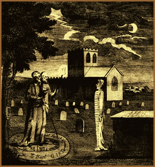
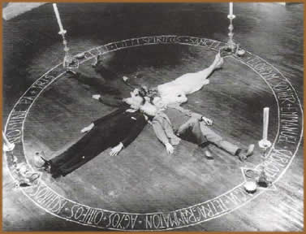

Segundo referências
da língua portuguesa, necromancia é a "suposta
previsão do futuro através da comunicação
com o espírito dos mortos". A origem etimológica
remete-se ao grego: necro = morte e mancia = adivinhação.
Porém, por um ponto
de vista mais objetivo, a necromancia, também conhecida
como nigromancia, é, de uma forma bastante simplificada,
uma prática de fundamento ocultista que busca manter
contato com a alma dos mortos através de uma ritualização
determinada, com o objetivo de elaborar previsões,
obter aconselhamentos e orientações das almas
na vida cotidiana ou até mesmo escravizá-las.
Pois, há uma suposta crença que os mortos,
por não estarem mais limitados à condição
terrena, têm uma percepção mais apurada
e a propriedade de predizer o futuro.
Há
várias suposições a respeito de sua
origem histórica. Mas é mais provável
que tenha surgido no período pré-cristão
nas crenças entre os povos asiáticos, principalmente
os persas. No entanto, há também referências
históricas entre os romanos e os gregos, e até
mesmo entre os aborígenes americanos. Dessa forma,
a Necromancia não está associada a nenhuma
doutrina religiosa específica; sendo comum encontrá-la
citada, com algumas variações não muito
significativas, em diversas ramificações do
ocultismo, em períodos cronológicos distintos
e culturas distantes.
Mesmo as populares religiões
afro-brasileiras têm em seus ritos evocações
aos espíritos dos mortos; quando, por exemplo, o
sacerdote recebe o espírito de uma entidade; ou seja,
de alguém já falecido. Porém, se aplicarmos
o mesmo raciocínio rígido, qualquer evocação
à espíritos de mortos (como encontrada também
no Espiritismo e em cerimônias xamânicas) é
uma forma de prática necromante.
Rituais
Assim como em outras práticas
ocultistas, a Necromancia reúne uma série
de elementos necessários em seu cerimonial de evocação
que costumam se estender por horas: cânticos, instrumentos,
vestimentas e objetos que trazem uma representação
simbólica; além de horários e dias
específicos e outras referências que o praticante
deve observar. Dessa forma, segundo as tradições
necromantes, é possível promover uma conexão
espiritual com a alma dos mortos que ainda mantém-se
retidas num plano inferior. Esse contato só seria
possível com almas recém desencarnadas ou
que estejam vulneráveis no plano espiritual; ou seja,
que ainda não tenham sido conduzidas ao Reino Divino.
Contudo, a Necromancia, em sua acepção mais
pura e antiga, traz alguns aspectos mais macabros que outras
práticas adivinhatórias.
O uso de cadáveres,
ou de, no mínimo, partes do corpo como ossos, dentes,
unhas, pêlos e fios de cabelo, é comum à
Necromancia. Neste momento não há simbolismos
ou representações alegóricas. A presença
física de um cadáver ou de seus restos mortais
é freqüente nos rituais; pois, é o espírito
daquele corpo que será evocado. Ainda, objetos pessoais
do falecido, terra da sepultura ou fragmentos da lápide
ou do esquife também são utilizados. Em relatos
mais surpreendentes, o cadáver seria capaz de falar
por si próprio. Em outras situações,
a alma do falecido toma posse temporariamente do corpo de
um dos praticantes. Enquanto que cerimônias ritualísticas
em cemitérios com a violação de túmulos
e a mutilação de cadáveres poderiam
ser atividades corriqueiras aos praticantes da antiguidade.
Por
outro lado, as evocações de caráter
mais simbólico utilizam a Tábua de Ouija para
interpretar as mensagens recebidas do além. Até
mesmo o popular "jogo do copo", que se utiliza
de um copo de cristal com sua abertura voltada para a superfície
de uma mesa, sendo levemente conduzido pelos participantes,
que seguem a orientação do espírito
evocado, em direção à letras e números
escritos em pedaços de papel e previamente distribuídos
em círculo. Ainda, pêndulos e cartas também
podem ser instrumentos de comunicação e interpretação
para com os espíritos.
Entretanto, tais práticas
geram uma grande exaustão em seus participantes e
são extremamente perigosas senão forem bem
conduzidas. Segundo os grimórios que abordam o tema,
os praticantes estão sujeitos à possessões
demoníacas, danos físicos e psicológicos
permanentes, entre outros. Por este motivo, as cerimônias
devem ser administradas somente por pessoas experientes
e bem preparadas.
Citações
Históricas
Umas das citações históricas
mais recorrentes que pode ser interpretada como uma referência
à Necromancia está na própria Bíblia.
No primeiro Livro de Samuel, capítulo 28, quando
o Rei Saul recorre à feiticeira de Em-Dor para comunicar-se
com o falecido profeta Samuel, que prevê a morte de
Saul. No Livro de Isaías (8:19/20) a citação
é mais clara: "Porventura não consultará
o povo a seu Deus? A favor dos vivos consultar-se-á
aos mortos? A lei e ao testemunho! Se eles não falarem
segundo esta palavra, é porque não há
luz neles". No apócrifo Macabeu II, há
também uma citação direta a respeito
do contato com os mortos.
Ainda, grandes nomes do ocultismo, como
John Dee,
Eliphas
Levi e, obviamente, São
Cipriano, teriam se envolvido com práticas necromantes.
De qualquer forma, a Necromancia, apesar
de ser vista como uma aberração, é
muito mais freqüente nos dias de hoje do que se possa
supor, pois atende a uma curiosidade intrínseca ao
ser humano: saber o que há "do outro lado".
Por
Spectrum